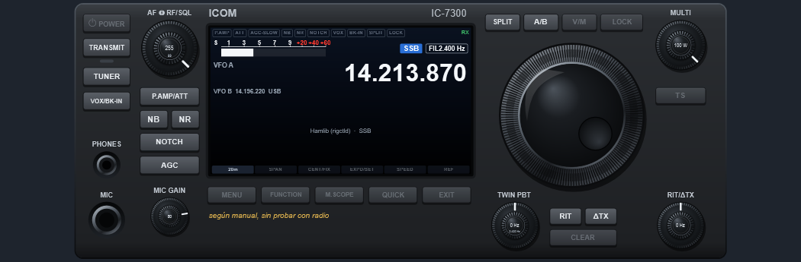
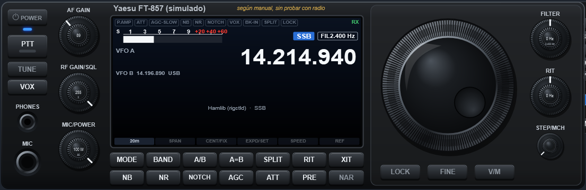
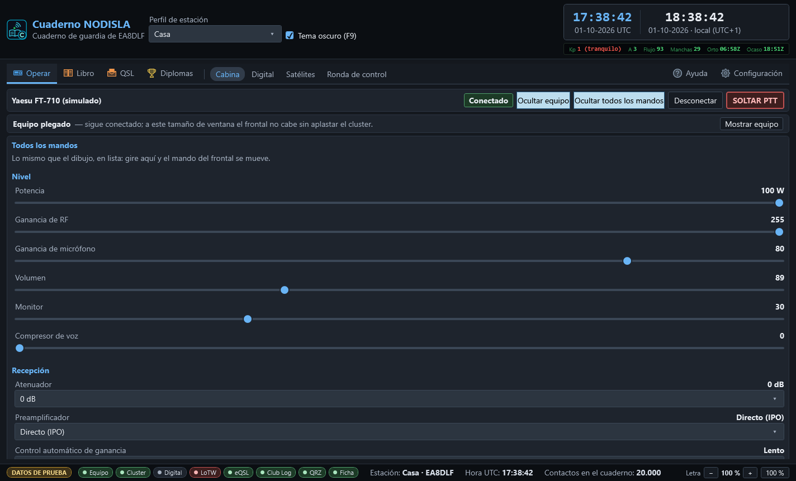
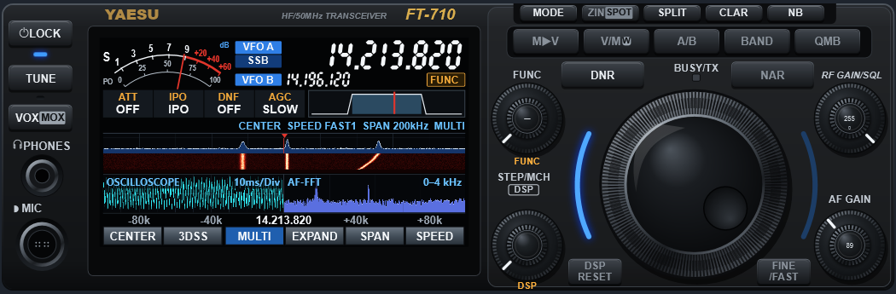

Equipos: el FT-710, otros Yaesu e ICOM
El cuaderno habla con la radio por CAT nativo: el juego de órdenes del propio fabricante, por el puerto serie del equipo. Es lo que permite dibujar el frontal, mover sus mandos y leer sus medidores. Se configura en Configuración › Equipo (CAT) (ver Primer uso).
Qué equipos hay
| Fabricante | Modelos | Cómo habla |
|---|---|---|
| Yaesu (CAT nuevo) | FT-710, FTDX10, FTDX101D, FTDX101MP, FT-991, FT-991A, FT-891, FTDX3000, FTDX5000, FTDX1200 | Órdenes de texto acabadas en ; |
| Yaesu (CAT antiguo) | FT-817, FT-818, FT-857, FT-897 | Órdenes de 5 bytes; no se autodetectan |
| ICOM | IC-7300, IC-7610, IC-705, IC-7100, IC-9700, IC-7851 | CI-V, con la dirección de cada modelo |
El FT-710 está probado con la radio de verdad. Los demás están programados según el manual, sin probar con radio: el desplegable de modelo y el panel del equipo lo dicen con letras. Si tiene uno de ellos y algo no cuadra, repórtelo desde Ayuda › Reportar un fallo: el informe ya lleva el modelo y la vía.
En ICOM, la dirección CI-V de fábrica de cada modelo ya está puesta; si la cambió en la radio, escríbala en el apartado. Para cualquier otro equipo quedan rigctld (Hamlib, por TCP) y OmniRig, con lo básico: frecuencia, modo y PTT.
Si no sabe qué radio es o en qué puerto está, elija Detectar automáticamente: se prueba el puerto guardado y después todos, preguntando identificación. Solo se pregunta; nunca se transmite.
El frontal
Con el equipo conectado, Operar › Cabina dibuja su frontal: el del FT-710 con sus 24 mandos, y frontales propios para el FTDX10, el FTDX101, el FT-991A, el FT-891, el IC-7300, el IC-7610 y el IC-705. Los demás salen con un frontal genérico con lo que el equipo declara.




Los mandos se tocan igual que en la radio: rueda del ratón o flechas del teclado. En los mandos dobles, la rueda sobre el centro (o Mayús + flechas) mueve el mando de dentro. Un mando que el equipo no admite no sale: no hay botones muertos.
- Todos los mandos despliega la lista completa de lo que declara el equipo, con su valor y su recorrido. Mover uno en la lista lo mueve en el dibujo, y al revés.
- Ocultar equipo pliega el frontal para dejar sitio; se recuerda de una vez a otra.
- SOLTAR PTT, en rojo y siempre a la vista, baja el PTT sin preguntar.


El analizador de espectro del FT-710
La pantalla del frontal del FT-710 enseña el espectro de la propia radio, el mismo que se ve en su pantalla: traza, cascada y la marca roja del VFO. No lo calcula el PC: lo manda la radio por el USB, a través del puente FTDI FT4222 que lleva dentro.
Hace falta:
- En la radio, MENU › OPERATION SETTING › GENERAL › SCU-LAN10 = ON (no hace falta tener la SCU-LAN10).
- En el PC, el controlador D2XX de FTDI.
Las teclas de debajo de la pantalla hacen lo mismo que en la radio: CENTER / FIX, 3DSS (vista en perspectiva), EXPAND (más alto para el analizador), SPAN − / + y SPEED − / +. Al pulsarlas se manda la orden a la radio, y lo que se cambie en la radio se ve aquí.
Si no llega el espectro, el analizador dice por qué: falta la biblioteca de FTDI, no aparece el dispositivo (radio apagada o sin controlador) o no llegan tramas (mire SCU-LAN10). Se reintenta solo cada pocos segundos.
MULTI: osciloscopio y AF-FFT
La tecla MULTI hace lo que la pantalla MULTI del FT-710: el analizador en pequeño arriba y, debajo, el osciloscopio y el AF-FFT del audio de recepción. Es una vista del programa, no manda nada a la radio. Usa la entrada de audio del códec del equipo (la misma del módem); si el audio no está abierto, el aviso de MULTI ofrece abrirlo.


La botonera: bandas, modos, memorias y canales CB
A los lados del frontal (en Cabina y en Digital):
- HAM, a la izquierda: Banda (vuelve a la última frecuencia y modo de esa banda, como la tecla BAND), Modo (LSB · USB · CW · AM · FM · DATA; DATA es DATA-L por debajo de 10 MHz y DATA-U por encima) y Memoria (M1 … M6).
- Canales CB, a la derecha: los 40 canales de 27 MHz con su plan (11m · UK · CEPT · PL · USA, se recuerda).
La tecla de la banda, el modo o el canal en que está el dial se ve en azul. Nada de la botonera transmite. Sin equipo conectado, las teclas se apagan y dicen por qué.
Lo que el programa no hace nunca con la radio
- Conectarse solo al abrir.
- Transmitir sin una acción del operador (y, en el módem, sin abrir antes el pestillo).
- Cambiar menús de la radio. Solo lee los que necesita para avisar (por ejemplo, la fuente de modulación para la fonía).
- Dejar un PTT subido: el vigilante de PTT lo baja al agotarse el tiempo máximo, si se pierde la comunicación, si salta un fallo o al cerrar el programa.